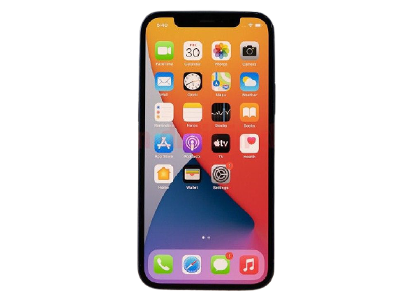

| Mobile Phone | Home | About | Gallary | Contact |
|---|---|---|---|
| This study aims to investigate the access to a mobile phone, usage pattern, and its impact on mountainous rural women of two districts, i.e., Hunza and Nagar districts of Gilgit-Baltistan, Pakistan. To attain the objective of the research, the researchers have employed various statistic methods, and data were collected through a questionnaire from 190 respondents in the study area (200 respondents were selected). | |||
|  | The following theoretical framework is the concept map that provides a guideline for researchers to follow accordingly. Based on the previous literature, we developed a theoretical framework as shown in Figure 1. Four major categories were identified such as mobile phone (MP) access, skills to use MP, use in daily life activities, and use for safety and security purposes due to prevailing security threats in Pakistan. | ||
| A survey was carried out to collect the data from female research participants from Hunza and Nagar districts of GB, Pakistan. For this purpose, the researchers developed a questionnaire consisting of 31 items with two major sections. Further, Section A consisted of two subsections: the first subsection contains demographic data (age, the region of origin, and qualification) and the second subsection contains the access to the mobile phone, types of mobile phones, mobile phone brand, and service provider. | |||
| Contact: 01783466871 | |||